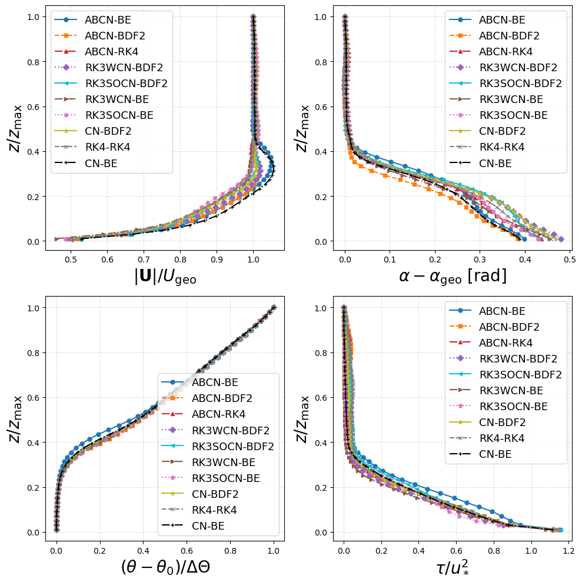

Time Integration Schemes
TOSCA features six time-stepping schemes for the momentum equation and four schemes for the temperature equation. These are selectable in the control.dat
file via the keywords -dUdtScheme and -dTdtScheme, respectively. In the following sections, the mathematical formulation of each scheme is
presented, along with recommendations for their use in different types of simulations. Guidelines regarding their combination and usage for
production runs are also provided at the end of this section.
Momentum Equation
Let \(\mathcal{H}^q_U(V^q, u_k) = N^q_U + L^q_U + S^q_U\) denote the full right-hand side of the momentum equation, where \(N^q_U\), \(L^q_U\) and \(S^q_U\) denote the advection, viscous and source terms, respectively. These are function of the staggered contravariant fluxes \(V^q\) (the solved variable) and the cell-centered cartesian velocity \(u_k\), interpolated from the contravariant fluxes. The pressure gradient, referred to as \(G^q\), is always treated explicitly and then corrected, after the solution of the pressure equation, in the projection step to enforce mass conservation (see Numerical Method). The index \(q\) denotes the curvilinear components \(\xi\), \(\eta\) and \(\zeta\), represented in the TOSCA code by indices i, j and k, respectively.
One of the following schemes can be selected to compute the predicted velocity field \(V^{q,*}\) at the new time level \(n+1\), to be used in the projection step:
Explicit Forward Euler
First-order explicit scheme, selectable with -dUdtScheme FE. The velocity prediction reads:
this method is conditionally stable, i.e. \(\mathrm{CFL} < 1\), but in practice it requires much lower CFL values. This numerica scheme is only used for testing and it is not recommended for production cases, due to its low accuracy and stringent stability requirements.
Explicit Runge–Kutta 4
Fourth-order classical four-stage explicit Runge–Kutta scheme, selectable with -dUdtScheme RK4. The velocity prediction reads:
with Butcher coefficients \(\mathbf{b} = (\tfrac{1}{6},\tfrac{1}{3},\tfrac{1}{3},\tfrac{1}{6})^\top\) and \(\mathbf{a} = (0,\tfrac{1}{2},\tfrac{1}{2},1)^\top\). Fourth-order accurate in time, conditionally stable. Requires four full right-hand-side evaluations per step and \(\mathrm{CFL} < 1\). In practice, the scheme is unstable for CFL values greater than 0.5-0.6.
Crank–Nicolson
Fully implicit second-order scheme solved with PETSc’s Newton trust-region SNESTR solver, selectable with -dUdtScheme CN. The nonlinear residual is defined as
where convection and viscous terms use proper Crank Nicolson formula, while source terms are either fully implicit (where possible) or explicit (e.g., as the wind farm body force). The buoyancy term \(B^q\) is predicted at time level \(n+1\) using second-order Adams–Bashforth (AB2) extrapolation to enhance the coupling with the temperature equation, and it is calculated as
The nonlinear system is solved using Newton–Krylov iterations with a matrix-free Jacobian (MATMFFD) and a BiCGStab (default) or GMRES inner solver. To reduce the number of Newton iterations, a source buffer \(\mathbf{b}_U\) precomputes all terms that are independent of the current iterate (pressure gradient, half contribution of convection and advection and the some source terms), and an explicit Forward Euler prediction provides the initial guess. The scheme is unconditionally stable and practically second-order accurate in time. This is among the recommended schemes for production runs, where the cost of nonlinear solves is offset by the ability to use large time steps (CFL \(\to 1\)). Notably, this has been the preferred scheme in TOSCA up to v1.2.0, after which implicit-explicit (IMEX) time schemes have been implemented to further enhance the speed of the code, while maintaining comparable the maximum CFL used for production runs.
IMEX-ABCN (Implicit–Explicit Adams–Bashforth/Crank–Nicolson)
This is a split implicit-explicit (IMEX) scheme, where convection is treated explicitly with Adams–Bashforth 2 (AB2) and diffusion is treated implicitly
with Crank–Nicolson. It is selectable with -dUdtScheme ABCN and the velocity prediction reads:
where the explicit buffer \(\mathbf{b}^q_U\) is assembled once per step from fields at time levels \(n\) and \(n-1\):
The first step uses Forward Euler for the AB2 convection stencil. The resulting linear system
is solved directly with a standalone PETSc KSP (GMRES - default - or BiCGStab with \(L=2\)) solver. The scheme is second-order accurate in time for the convection and viscous terms,
and in some cases faster than Crank Nicolson in terms of simulated time advancement. Notably, because convection is treated explicitly, the scheme is conditionally stable and
often requires stabilization through the addition of sixth-order explicit hyperviscosity to suppress Nyquist-mode noise at high CFL numbers. The recommended CFL limit is
\(\mathrm{CFL} \lesssim 0.5\), if no hyperviscosity is used, or \(\mathrm{CFL} \lesssim 0.6\) when hyperviscosity is active (either as a standalone correction
or as a mild filter on top of the -central4 scheme). Running this scheme with CFL close to or above 0.7 will likely lead to numerical instability.
IMEX-RK3SOCN (Sor-Osher Runge Kutta 3 (TVD)/Crank Nicolson)
This is a split implicit-explicit (IMEX) scheme, where convection is treated explicitly with Sor-Osher Runge Kutta 3 and diffusion is treated implicitly
with Crank–Nicolson. It is selectable with -dUdtScheme RK3SOCN. Denoting
where convection is evaluated at the current stage and the buoyancy term is predicted with AB2 extrapolation as in the Crank–Nicolson scheme, the velocity prediction reads:
stage 1:
stage 2:
stage 3:
Notably, at each stage the diffusion term is treated implicitly with Crank–Nicolson, which requires the solution of a linear system with the same matrix \(A\) as in the IMEX-ABCN scheme, although with a different right-hand side. The scheme is third-order accurate in time for the convection and viscous terms, it is conditionally stable with a recommended CFL limit of \(\mathrm{CFL} \lesssim 1.0\). Because the Sor-Osher RK3 is a TVD scheme, it possesses a high non-linear stability limit for convection-dominated flows, supporting a CFL number typically equal or higher than 1.0. In practice, the scheme is stable for CFL values up to around 0.9 and it advances the solution faster than the classic Crank–Nicolson scheme.
IMEX-RK3WCN (Wray-Lund Runge Kutta 3/Crank Nicolson)
This is a split implicit-explicit (IMEX) scheme, where convection is treated explicitly with Wray-Lund Runge Kutta 3 and diffusion is treated implicitly
with Crank–Nicolson. It is selectable with -dUdtScheme RK3WCN. Denoting \(K^{q,stage}_U\) as in the previous scheme, the
velocity prediction reads:
stage 1:
stage 2:
stage 3:
Also for this scheme, the implicit treatment of the diffusion term using Crank–Nicolson requires the solution of a linear system with the same matrix \(A\) as in the IMEX-RK3SOCN scheme, although with a different right-hand side. The scheme is third-order accurate in time and conditionally stable with a recommended CFL limit of \(\mathrm{CFL} \lesssim 1.73\). The Wray-Lund RK3 scheme possesses better linear stability properties than the Sor-Osher scheme, although the latter has higher non-linear stability due to its TVD property. The Wray-Lund RK3 scheme is widely used for DNS/LES and it is expected to be the future preferred scheme for convection-dominated flows in TOSCA. In practice, the scheme is stable for CFL values up to around 1.1 and it advances the solution faster than the classic Crank–Nicolson scheme.
Temperature Equation
Let \(\mathcal{H}_T(T, V^q) = N_T + L_T + S_T\) be the full right-hand side of the temperature equation, where \(N_T\), \(L_T\) and \(S_T\) represent the convection, diffusion, and source terms (including Rayleigh-damping and temperature controllers).
Runge–Kutta 4
Four-stage explicit scheme, identical in structure to the momentum counterpart:
with the same Butcher coefficients as above. Conditionally stable, requires \(\mathrm{CFL} < 1\). In practice, especially under thermally unstable or convective boundary layers, the scheme is unstable for CFL values greater than 0.5-0.6.
Backward Euler
Fully implicit first-order scheme. The nonlinear residual
is solved using PETSc’s SNES with the same Newton–Krylov configuration used for the Crank Nicolson scheme in the momentum equation. This scheme is unconditionally stable and first-order accurate in time. In practice, since the temperature equation is much smoother than the momentum equation, second-order accuracy in time of the temperature field is often not required as long as the velocity field is solved accurately. For this reason, Backward Euler is often used due to its robustess.
BDF2 (Second-order Backward Differentiation Formula)
Second-order fully implicit scheme that uses a three-level time-derivative approximation. The nonlinear residual is
which is solved with the same Newton–Krylov SNES configuration as Backward Euler. On the first time step, BDF2 falls back to Backward Euler (only \(T^n\) is available). BDF2 is A-stable and mildly dissipative at high wavenumbers, compared to e.g. the Crank Nicolson scheme, which is also second-order accurate. This is preferred for temperature, as high-frequency errors may accumulate in stratified LES, forming spurious gravity waves which could cause the simulation to diverge. This scheme is recommended for stable stratification runs where second-order accuracy in time is required. If the simulation is unstable with BDF2, it is recommended to switch to Backward Euler, which is more robust but only first-order accurate in time.
IMEX-BEAB (Implicit–Explicit Backward Euler Adams–Bashforth 2)
Implicit–explicit scheme: convection treated explicitly with Adams–Bashforth 2 and diffusion treated implicitly with Backward Euler. The temperature update reads:
where the explicit buffer is
with \(c_1 = 3/2\), \(c_2 = -1/2\) (AB2; on the first step: \(c_1 = 1\), \(c_2 = 0\)). The operator \(A\) is symmetric positive definite, the system is solved with the same standalone KSP (GMRES - default - or BiCGStab) used for the IMEX momentum equation.
Practical Combination of Schemes
In the following table, some recommended combinations of momentum and temperature time-stepping schemes are listed for production runs, along with notes on their stability and accuracy properties. The choice of the time-stepping scheme should be guided by the specific requirements of the simulation, such as the desired accuracy, computational resources, and the nature of the flow (e.g., turbulent vs. laminar, stable vs. unstable stratification). Also, practical values of the maximum CFL number are given in order to allow users to minimize their compute time. Notably, while some schemes are unconditionally stable or - even if explicit - possess a high stability limit, the presence of other physics in the simulation (e.g. strong convection, actuator lines, gravity waves etc.) may require the user to adopt a much lower CFL than practical limits. Moreover, while some schemes remain perfectly stable at CFL numbers greater than unity, production simulations in TOSCA have always been conducted with CFL numbers around 0.9. On the one hand, if one constrants the CFL to the latter value, the RK3SOCN and RK3WCN schemes for the momentum equation are about 1.5 times faster than the implicit CN scheme. On the other hand, considering the maximum time advancement achievable by each momentum time-stepping scheme, the speed of the CN scheme at CFL around 1.6 is comparable to the above-mentioned RK3 IMEX schemes, as these cannot exceed a practical CFL of around 1 and 1.1, respectively. For temperature, because oscillations in the buoyancy term have a huge impact on momentum stability, an implicit scheme, like BE or BDF2, is always preferred to maintain the solution as stable as possible.
U Scheme |
T Scheme |
Notes |
|---|---|---|
RK4 |
RK4 |
practical CFL less than 0.5. Fourth-order accurate in time. Suitable for non-turbulent or idealized runs, e.g. isolated turbine or actuator line simulations, where a small time step is required anyway, satisfying CFL << 1. |
RK3SOCN |
RK4 |
practical CFL of 0.6/0.7 because of fully-explicit temperature treatment. Third-order accurate and TVD. This may be faster than treating temperature implicitly, but might be unstable and require implicit temperature treatment. |
CN |
BDF2/BE |
robust choice, practical CFL from 0.9 to 1.5. Preferred when the cost of the nonlinear-solve is offset by large time steps. BDF2 gives second-order accuracy in time with mild A-stable dissipation, BE is more dissipative but more robust. |
RK3WCN |
BDF2/BE |
robust choice, practical CFL from 0.9 to 1.0. Production runs balancing stability and efficiency, slightly less than third-order accurate in time. Might provide a faster time advancement than CN in many cases. |
To investigate the correctness of each time-scheme’s implementation, as well as its stability properties for practical atmospheric boundary layer problems, a simple convenctionally neutral boundary layer has been simulated on a coarse grid, using the Smagorinsky LES model and standard wall modeling treatment, for many different combinations of velocity and temperature time schemes. The grid is a simple Cartesian box with dimensions 1000 m x 1000 m x 1000 m, discretized with 20 x 20 x 20 cells, and periodic boundary conditions are applied in the horizontal directions. The flow is initialized with a uniform horizontal velocity of 10 m/s and a vertical potential temperature profile characterized by a ground temperature of 290 K and a linear lapse rate of 10 K/Km. The roughness height is set to 0.01 m, simulations are run for 90000 seconds and data shown in the figure corresponds to the last 5000 s of simulation. The time step is adjusted depending on the chosen momentum scheme; specifically, a CFL number of 0.5 is set for the RK4 and ABCN schemes, and 0.9 is enforced for the RK3SOCN, RK3WCN and CN schemes. Although sinusoidal perturbations are set in the first 50 m of the domain to trigger turbulence, different scheme result in different turbulence onset times. As a result, the final boundary layer height at the end of the 90000 s differs slightly from case to case, with earlier turbulence onset generally corresponding to a more prolongated mixing of the boundary layer, hence to a higher final boundary layer height. In general, the results show that all schemes produce very similar mean velocity and temperature profiles, as well as shear stress profiles, that are in line with each other and with expected results for a conventionally neutral boundary layer, even if the mesh is very coarse and the domain very small.
{kind=link}

Velocity magnitude (top-left), wind angle (top-right), potential temperature (bottom-left) and shear stress (bottom-right) profiles averaged horizontally and in time for the last 5000 s of simulation. Test cases are marked based on their momentum and temperature time-stepping schemes.